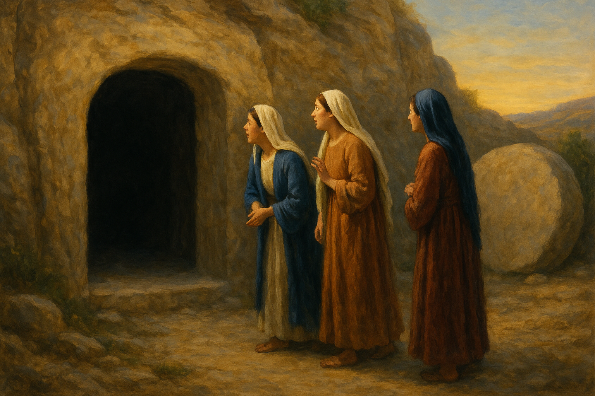

7.7 Jésus est-il réellement ressuscité ?
L’événement de la résurrection est tellement central à la foi chrétienne que l’apôtre Paul écrit : Si Christ n’est pas ressuscité, notre foi est vaine (1 Corinthiens 15,17). Autrement dit, toute la foi chrétienne repose sur la réalité historique ou non de ce fait.
Pour en évaluer la crédibilité d’un point de vue historique, nous allons considérer trois approches. La première est celle des « minimal facts » proposée par Gary Habermas et Michael Licona, qui consiste à se concentrer sur les éléments les plus largement reconnus par les chercheurs, y compris sceptiques1. La seconde est l’observation du changement radical des disciples avant et après la resurrection de Jésus. Finalement, la troisième approche est l’analyse de N. T. Wright, qui met en évidence l’émergence inattendue d’une croyance en une résurrection corporelle individuelle et immédiate au sein du judaïsme du Ier siècle, ainsi que les mutations sociales et théologiques qui en découlèrent23.
7.7.1 Approche 1: L’approche des faits largement admis (« minimal facts ») #
L’approche des « minimal facts » est une méthode développée par Gary Habermas et Michael Licona pour défendre la résurrection de Jésus. Elle se concentre uniquement sur des faits historiques qui remplissent deux critères :
- Ils sont solidement établis par les données historiques disponibles.
- Ils sont largement acceptés par la majorité des spécialistes du Nouveau Testament, y compris sceptiques ou non chrétiens.
Les faits minimaux:
- La mort de Jésus par crucifixion
La crucifixion de Jésus est attestée par les Évangiles, les lettres de Paul, ainsi que par des sources extra-bibliques comme Tacite (Annales XV, 44) et Flavius Josèphe (Antiquités juives XVIII, 63–64). Cet événement est presque unanimement reconnu par les historiens1.
De plus il est réellement mort sur la croix. Ce fait est l’un des mieux établis de toute l’histoire antique comme nous l’avons démontré au chapitre 7.6.
- Les expériences des disciples affirmant avoir vu Jésus ressuscité
Les disciples étaient convaincus d’avoir rencontré Jésus vivant après sa mort. Ces expériences ont profondément transformé les disciples, qui sont passés de la peur à une proclamation publique allant jusqu’au martyre.
La tradition de 1 Corinthiens 15,3–7, citée par Paul vers 55 apr. J.-C., est antérieure à la lettre et remonte probablement à quelques années seulement après la crucifixion. Elle contient un résumé catéchétique structuré de la foi primitive, ce qui rend hautement improbable une invention tardive14.1 Corinthiens 15,3-7: « Je vous ai transmis, avant tout, ce que j’avais moi-même reçu : que le Christ est mort pour nos péchés, selon les Écritures ; qu’il a été enseveli ; qu’il est ressuscité le troisième jour, selon les Écritures ; et qu’il est apparu à Céphas (Pierre), puis aux Douze.
Ensuite, il est apparu à plus de cinq cents frères à la fois — dont la plupart sont encore vivants, et quelques-uns sont morts.
Ensuite, il est apparu à Jacques, puis à tous les apôtres. »

-
La conversion de Paul
Paul, persécuteur du mouvement chrétien, devient l’un de ses principaux missionnaires. Il attribue ce changement radical à une apparition du Ressuscité (Actes 9, 22, 26 ; Galates 1:11-16)4. -
La conversion de Jacques, frère de Jésus
Jacques, présenté dans les Évangiles comme sceptique (Jean 7:5: « Car ses frères non plus ne croyaient pas en lui. »), devient après la résurrection un leader de l’Église de Jérusalem et est reconnu comme martyr par Flavius Josèphe (Antiquités juives XX, 200)5. -
Le tombeau vide (optionnel)
Ce fait n’est pas unanimement retenu par tous les historiens, mais il reste largement soutenu. Il repose sur la découverte rapportée par les femmes (un détail embarrassant dans une culture où leur témoignage était peu valorisé) et sur l’absence de vénération d’un tombeau connu de Jésus à Jérusalem3.
Examinons à présent en détails 4 de ces piliers à travers les 2 questions suivantes (Le premier pilier a été traité au chapitre 7.6).
A. Le tombeau était-il vide ? #
Arguments en faveur:
-
Les récits du tombeau vide apparaissent dans les quatre évangiles (Marc 16 ; Matthieu 28 ; Luc 24 ; Jean 20). Ils rapportent que ce sont des femmes qui en ont fait la découverte. Dans la culture juive du Ier siècle, le témoignage des femmes avait peu de poids juridique. Cet élément, embarrassant pour une invention, constitue un indice fort d’authenticité2.
-
Un autre argument provient de la polémique la plus ancienne rapportée dans l’évangile de Matthieu (28,15) : les autorités juives affirmaient que les disciples avaient volé le corps. Même si cette accusation peut être perçue comme une tentative de discrédit, elle présuppose malgré tout que le tombeau était vide1. En effet, les opposants du christianisme primitif n’ont pas nié que le tombeau était vide.

Matthieu 28,11–15 (Segond 21):
« 11 Pendant qu’elles étaient en chemin, quelques hommes de la garde entrèrent dans la ville et annoncèrent aux chefs des prêtres tout ce qui s’était passé.
12 Ceux-ci, après s’être réunis avec les anciens et avoir tenu conseil, donnèrent aux soldats une forte somme d’argent
13 en disant : « Dites : Ses disciples sont venus de nuit le dérober, pendant que nous dormions.
14 Et si le gouverneur l’apprend, nous l’apaiserons et nous vous tirerons de peine. »
15 Les soldats prirent l’argent et firent ce qu’on leur avait dit. Et ce bruit s’est propagé parmi les Juifs jusqu’à aujourd’hui.»
- De nombreux historiens, croyants ou non, reconnaissent que le récit du tombeau vide possède une certaine plausibilité historique. Gary Habermas, spécialiste de la résurrection, note que plus de 75 % des chercheurs l’acceptent comme un fait probable1.
Arguments sceptiques:
- Certains critiques, comme Bart D. Ehrman (How Jesus Became God, 2014), soulignent qu’aucune source non chrétienne contemporaine ne mentionne explicitement le tombeau vide4.
B. Les apparitions de Jésus peuvent-elles être considérées comme authentiques ? #
Après avoir examiné le tombeau vide, il faut maintenant considérer la question des apparitions : les témoignages les plus anciens affirment en effet que Jésus a été vu vivant après sa mort.
Arguments sceptiques:
- L’évangile de Marc, généralement daté vers 70 apr. J.-C., se termine abruptement en Marc 16,8 avec des femmes effrayées, sans récit d’apparition:
« Elles sortirent du tombeau et s’enfuirent, car elles étaient toutes tremblantes et hors d’elles-mêmes ; et elles ne dirent rien à personne, tant elles avaient peur.»
Les versions plus longues de Marc étant tardives, cela suggère que les traditions liées au tombeau et aux apparitions se sont développées progressivement4. - Les sceptiques rappellent que les récits divergent dans les détails. Matthieu situe les apparitions en Galilée, Luc les place à Jérusalem, et Jean combine les deux. L’ordre des événements et les témoins varient, ce qui reflète probablement une tradition orale plurielle4.
- Pour Ehrman, il est donc plus prudent de considérer ces récits comme des expériences visionnaires ou des expériences religieuses intérieures, analogues à des extases mystiques4.
Arguments en faveur:
- Le témoignage le plus ancien concernant les apparitions ne vient pas des évangiles, mais de Paul. Dans 1 Corinthiens 15, il transmet une tradition reçue, probablement à Jérusalem, qui liste les principaux témoins des apparitions. Ce passage, rédigé environ 25 ans après la crucifixion, reflète une tradition qui remonte sans doute à moins d’une décennie après les événements1.
- Ce qui frappe, c’est la diversité des témoins. Certains étaient proches de Jésus (Pierre, les Douze), d’autres étaient des groupes entiers (plus de 500 personnes), et d’autres encore étaient initialement hostiles ou sceptiques (Jacques et Paul). La conversion de ces derniers constitue un argument particulièrement fort, car elle ne peut pas s’expliquer par le seul désir de croire12.
- N. T. Wright note également que les récits des évangiles insistent sur le caractère à la fois corporel et transformé du ressuscité : Jésus parle, marche, partage des repas, mais il apparaît et disparaît de manière soudaine. Ce mélange de continuité et de nouveauté ne correspond ni à un simple fantôme, ni à une métaphore symbolique. Il reflète la conviction d’une expérience réelle et inédite23.
Théorie alternative pour expliquer le tombeau vide et les apparitions #
La méthode des faits minimaux a l’avantage d’éviter le débat sur l’inerrance biblique, puisqu’elle se limite à des données historiques acceptées même par des spécialistes non croyants. Elle place ainsi tous les interlocuteurs sur un terrain commun.
Même Bart D. Ehrman, pourtant critique, admet l’ancienneté du témoignage de 1 Corinthiens 15 et la sincérité des expériences vécues par les disciples. Il conteste toutefois que cela suffise à établir une résurrection corporelle publique et vérifiable4.
Quelle est donc la meilleure explication de ces faits ? Habermas et Licona soutiennent que seule l’hypothèse de la résurrection rend compte de l’ensemble de ces données de manière cohérente et satisfaisante. Mais quelles sont les hypothèses concurrentes proposées, et résistent-elles à l’analyse ?
a) Le vol du corps
L’hypothèse selon laquelle les disciples auraient dérobé le corps suppose un complot coordonné et un silence durable de nombreux complices. Elle n’explique pas non plus les apparitions multiples ni la conversion de figures hostiles comme Jacques et Paul12.
b) Les hallucinations individuelles ou collectives
-
Arguments pour:
- Des phénomènes religieux collectifs existent, comme certaines apparitions mariales où de grands groupes affirment avoir vu la Vierge. Dans ce contexte, le climat émotionnel et l’attente des disciples auraient pu favoriser des expériences partagées.
-
Arguments contre:
- La psychologie moderne souligne que les hallucinations sont généralement individuelles. Les véritables hallucinations collectives, où plusieurs personnes perçoivent exactement la même chose, sont extrêmement rares.
- Certaines apparitions concernent des personnes inattendues, comme Paul sur le chemin de Damas (Actes 9). Paul n’était pas en attente d’une vision, au contraire, il persécutait les chrétiens.
- Dans le judaïsme du Ier siècle, l’attente n’était pas celle d’une résurrection individuelle au milieu de l’histoire, mais d’une résurrection collective à la fin des temps. Les disciples n’avaient donc pas de raison psychologique de projeter une telle idée.
-
Ehrman concède que les disciples ont réellement vécu des expériences qu’ils ont interprétées comme des visions de Jésus, mais il conteste que cela prouve une résurrection corporelle4.
c) La légende tardive
- Certains avancent l’idée que la résurrection serait le fruit d’une légende tardive. Pourtant, la tradition de 1 Corinthiens 15 est trop ancienne pour cela. Sa structure rappelle une catéchèse primitive déjà fixée, ce qui rend improbable une invention progressive à partir de plusieurs décennies14.
7.7.2 La transformation des disciples #
Un des arguments forts en faveur de la résurrection est la transformation radicale des disciples:
- Avant la résurection, on les voit découragés, craintifs, et prêts à retourner à leur ancienne vie.
- Après les apparitions du Christ ressuscité, ils deviennent des témoins audacieux, proclamant son message jusqu’à la mort.
1. Avant la résurrection : la peur et le découragement #
-
Jean 20:19 : « Le soir de ce jour, qui était le premier de la semaine, les portes du lieu où se trouvaient les disciples étaient fermées, à cause de la crainte qu’ils avaient des Juifs. »
-> Ce verset se situe le soir du dimanche de Pâques, après la crucifixion mais avant que la majorité des disciples aient vu Jésus ressuscité. Ils sont enfermés et terrifiés, craignant d’être arrêtés par les autorités juives. Cela montre leur peur et leur absence de courage missionnaire. -
Luc 24:21 : « Nous espérions que ce serait lui qui délivrerait Israël; mais avec tout cela, voici le troisième jour que ces choses sont arrivées. »
-> Ces mots sont prononcés par les disciples d’Emmaüs le jour de la résurrection. Ils révèlent leur désillusion : ils espéraient un Messie libérateur d’Israël, mais la crucifixion leur paraît être un échec. Même s’ils ont entendu parler du tombeau vide, ils n’y croient pas encore.
👉 Ces passages révèlent le désespoir des disciples après la crucifixion.
2. Après la résurrection : l’audace des témoins #
-
Actes 2:32 : « C’est ce Jésus que Dieu a ressuscité; nous en sommes tous témoins. »
👉 Ce verset fait partie du discours de Pierre le jour de la Pentecôte, à Jérusalem, quelques semaines après la crucifixion. Celui qui s’était renié par peur proclame maintenant publiquement la résurrection devant des foules hostiles. C’est une preuve de la transformation radicale des disciples. -
Actes 4:20 : « Car nous ne pouvons pas ne pas parler de ce que nous avons vu et entendu. »
👉 Pierre et Jean, arrêtés puis relâchés par le Sanhédrin, refusent de se taire malgré les menaces. Leur audace contraste avec leur attitude de fuite et de peur avant Pâques : ils affirment désormais qu’il leur est impossible de taire leur expérience du Ressuscité. -
Actes 5:29-32 : « Pierre et les apôtres répondirent: Il faut obéir à Dieu plutôt qu’aux hommes. Le Dieu de nos pères a ressuscité Jésus, que vous avez tué en le pendant au bois. »
👉 Convoqués à nouveau devant le Sanhédrin, les apôtres défient ouvertement l’autorité religieuse en affirmant leur devoir d’obéir à Dieu plutôt qu’aux hommes. Leur témoignage porte explicitement sur la résurrection, même au risque de la mort.
👉 Les disciples proclament avec assurance un fait vécu, malgré les menaces.
3. Fidélité jusqu’au martyre #
La tradition chrétienne rapporte que presque tous les apôtres ont été martyrisés pour leur foi, sans jamais renier la résurrection :
- Matthieu : Eusèbe, citant Hégésippe (HE III.24), le situe en Éthiopie ; traditions divergentes sur sa mort : tué à la lance ou à l’épée.
- Marc : fondateur de l’Église d’Alexandrie selon Eusèbe (HE II.16) ; la tradition copte (IVᵉ s.) rapporte qu’il aurait été traîné par des chevaux jusqu’à sa mort.
- Luc : compagnon de Paul (Col 4:14) ; la tradition majoritaire dit qu’il est mort paisiblement en Grèce, mais d’autres traditions isolées affirment qu’il a subi le martyre (Pseudo-Dorothée, De vita et morte Prophetarum).
- Jean : exilé à Patmos (Apocalypse 1:9) ; Irénée (Contre les hérésies II.22) et Eusèbe (HE III.23) rapportent qu’il est mort de vieillesse à Éphèse ; Tertullien (De praescriptione haereticorum 36) mentionne une tentative de mise à mort dans l’huile bouillante, dont il aurait survécu.
- Jacques, fils de Zébédée : exécuté par l’épée sur ordre d’Hérode Agrippa I (Actes 12:1-2).
- Jacques, frère de Jésus : lapidé à Jérusalem (Flavius Josèphe, Antiquités 20.9.1) ; Eusèbe rapporte aussi qu’il aurait été précipité du haut du Temple avant d’être achevé (Histoire Ecclésiastique II.23).
- Pierre : crucifié à Rome sous Néron, selon Origène cité par Eusèbe (Histoire Ecclésiastique III.1) ; la tradition ajoute qu’il aurait demandé à être crucifié la tête en bas.
- Paul : décapité à Rome sous Néron, selon Eusèbe (Histoire Ecclésiastique II.25).
- André : selon la tradition, crucifié à Patras en Grèce sur une croix en X (Actes d’André, IIᵉ s. ; Eusèbe, HE III.1).
- Thomas : selon la tradition syriaque, il aurait prêché en Inde et y aurait été transpercé de lances (Actes de Thomas, IIIᵉ s.).
- Philippe : exécuté à Hiérapolis (Phrygie), crucifié ou lapidé (Actes de Philippe, IVᵉ s.).
- Barthélemy (Nathanaël) : Eusèbe (HE V.10) dit qu’il a prêché en Inde ; traditions divergentes : écorché vif puis décapité en Arménie (tradition arménienne), crucifié en Arabie, ou encore martyrisé en Inde.
- Simon le Zélote : selon diverses traditions, crucifié en Perse (Pseudo-Hippolyte) ou martyrisé en Syrie.
- Jude (Thaddée) : selon la tradition, tué en Perse à coups de bâton ou de hache (Actes de Thaddée).
- Matthias (remplaçant de Judas) : Eusèbe (HE I.12) mentionne son élection ; traditions divergentes : lapidé puis décapité à Jérusalem (Pseudo-Hippolyte) ou missionnaire en Éthiopie.
👉 Leur fidélité jusqu’à la mort témoigne de leur conviction profonde : ils avaient réellement vu Jésus ressuscité.
Note: Il faut cependant distinguer les sources bibliques et les traditions ultérieures :
- La Bible rapporte directement la mort de Jacques, fils de Zébédée (Actes 12:1-2).
- Flavius Josèphe (historien juif du Ier siècle) mentionne la mort de Jacques, frère de Jésus.
- Pour les autres apôtres, nous dépendons surtout d’écrits chrétiens plus tardifs (Eusèbe de Césarée au IVᵉ siècle, traditions locales, Actes apocryphes).
👉 Cela signifie que, bien que les détails précis varient selon les traditions, un fait reste constant : les premiers témoins ont maintenu leur proclamation de la résurrection au prix de leur vie, sans aucun indice de rétractation.
Conclusion #
Le passage de la peur à une proclamation courageuse, et l’acceptation du martyre par la majorité des apôtres, constitue un argument fort en faveur de la résurrection.
Il est difficile d’imaginer qu’un tel changement ait pu se produire sans un événement réel et bouleversant : la rencontre avec le Christ vivant.
7.7.3 Approche 3: L’argument de Wright #
L’historien et théologien N. T. Wright, dans son ouvrage monumental The Resurrection of the Son of God (2003), propose un argument historique majeur : la résurrection de Jésus est la seule explication qui rende compte de l’émergence précoce et radicale de la foi chrétienne. En effet:
-
Dans le judaïsme du Ier siècle, la croyance en une résurrection existait déjà, mais :
- elle concernait la résurrection collective de tous les justes, attendue à la fin des temps,
- et elle signifiait un retour corporel à la vie (pas seulement une survie de l’âme).
-
Jamais les Juifs n’auraient inventé l’idée d’une résurrection individuelle, en plein milieu de l’histoire, pour un seul homme.
- S’ils avaient eu une vision de Jésus après sa mort, ils auraient dit :
- soit qu’il était un fantôme,
- soit qu’il avait été assumé auprès de Dieu (comme Énoch ou Élie),
- mais pas qu’il était déjà ressuscité corporellement.
- S’ils avaient eu une vision de Jésus après sa mort, ils auraient dit :
-
Pourtant, c’est précisément ce que proclament les premiers chrétiens :
- Jésus est ressuscité corporellement,
- le troisième jour,
- et cela marque le début de la nouvelle création.
-
Cette proclamation s’est accompagnée d’une mutation radicale des pratiques et croyances juives :
- passage du sabbat au dimanche*,
- réinterprétation des Écritures à la lumière de Pâques,
- naissance de rites nouveaux comme le baptême et l’Eucharistie,
- un culte centré sur une personne (Jésus) — ce qui était inouï dans le judaïsme strictement monothéiste.
-
Pour Wright, la seule explication historique capable de rendre compte à la fois :
- du tombeau vide,
- des apparitions variées,
- et de l’émergence soudaine de cette théologie et de ces pratiques,
c’est que quelque chose s’est réellement passé : Jésus est sorti du tombeau d’une manière inédite.
En résumé, Wright soutient que la résurrection corporelle de Jésus est la seule explication historique qui rende compte de l’émergence soudaine et inédite de la foi chrétienne, car ni les catégories juives de l’époque, ni les hypothèses alternatives (hallucinations, légende, mythe) n’expliquent un tel bouleversement.
7.7.4 Conclusion #
L’historien peut affirmer avec certitude que Jésus a été crucifié et qu’il est mort, et que ses disciples ont sincèrement cru l’avoir vu vivant après sa mort. La tradition très ancienne de 1 Corinthiens 15, la diversité des témoins, la plausibilité du tombeau vide et l’émergence rapide de pratiques et croyances inédites forment un faisceau convergent d’indices.
Les explications purement naturelles — vol du corps, hallucinations ou légende tardive — échouent à rendre compte de la totalité des données sans multiplier les hypothèses ad hoc.
Trois approches différentes se renforcent mutuellement :
- L’approche des « minimal facts » (Habermas, Licona) montre que les faits les plus largement admis par les historiens trouvent leur meilleure explication dans la résurrection.
- L’observation du changement radical des disciples, passés de la peur au courage, jusqu’à accepter le martyre, confirme la force de leur conviction qu’ils avaient réellement vu le Ressuscité.
- Enfin, l’analyse de N. T. Wright met en évidence que seule une résurrection corporelle et historique peut expliquer l’émergence soudaine et inédite d’une théologie et de pratiques radicalement nouvelles au sein du judaïsme du Ier siècle.
Ainsi, l’explication de la résurrection corporelle de Jésus reste, selon Wright, Habermas, Licona et Strobel, l’hypothèse la plus cohérente et la plus intégrative1243.
Comme l’écrit Lee Strobel, journaliste d’investigation devenu chrétien après avoir étudié les preuves historiques :
« Il est plus raisonnable de croire que le tombeau était réellement vide et que les disciples ont vu Jésus vivant, plutôt que de supposer une combinaison improbable de complots, d’hallucinations et de légendes. » (Jésus : l’enquête, 1998)6.
Les sources historiques rapportent plusieurs éléments majeurs : le tombeau vide constaté par les femmes, les apparitions multiples de Jésus à ses disciples, la conversion radicale de Paul le persécuteur et de Jacques le sceptique, ainsi que le changement profond des apôtres passés de la peur au témoignage courageux. Ces faits s’accompagnent de l’émergence soudaine de croyances et de pratiques inédites, difficilement explicables sans un événement réel. Ainsi, la résurrection corporelle de Jésus demeure l’hypothèse la plus cohérente pour rendre compte de l’ensemble des faits.
En résumé:
Les sources historiques rapportent plusieurs éléments majeurs : le tombeau vide constaté par les femmes, les apparitions multiples de Jésus à ses disciples, la conversion radicale de Paul le persécuteur et de Jacques le sceptique, ainsi que le changement profond des apôtres passés de la peur au témoignage courageux. Ces faits s’accompagnent de l’émergence soudaine de croyances et de pratiques inédites, difficilement explicables sans un événement réel. Ainsi, la résurrection de Jésus demeure l’hypothèse la plus cohérente pour rendre compte de l’ensemble des faits.
→ 7.8 Quels sont les indices en faveur de la nature humaine de Jésus ?
Notes et références #
-
Habermas, Gary R., & Licona, Michael. The Case for the Resurrection of Jesus. Kregel, 2004. ↩︎ ↩︎ ↩︎ ↩︎ ↩︎ ↩︎ ↩︎ ↩︎ ↩︎ ↩︎
-
Wright, N. T. The Resurrection of the Son of God. Fortress Press, 2003. ↩︎ ↩︎ ↩︎ ↩︎ ↩︎ ↩︎
-
Wright, N. T. — The Resurrection of JESUS: Forgotten FACTS & IMPACT (vidéo). https://www.youtube.com/watch?v=TbGXS3vJOXM ↩︎ ↩︎ ↩︎ ↩︎
-
Ehrman, Bart D. How Jesus Became God. HarperOne, 2014. ↩︎ ↩︎ ↩︎ ↩︎ ↩︎ ↩︎ ↩︎ ↩︎ ↩︎ ↩︎
-
Flavius Josèphe, Antiquités juives XX, 200. ↩︎
-
Strobel, Lee. Jésus : l’enquête (The Case for Christ). Empreinte Temps Présent, 1998. ↩︎